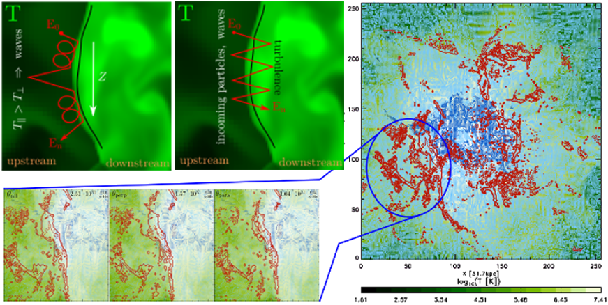

Cosmic Rays in Galaxy Clusters
Radio halos and radio halos, spectacular synchrotron sources, give observational proof of the existence of cosmic-ray electrons and magnetic fields in the intracluster medium (ICM), the hot ionised plasma between galaxies in clusters. Radio haloes are most-likely produced by turbulent re-acceleration in the ICM, while radio relics are most-likely produced by shock (re-)acceleration of cosmic-ray electrons. Eventhough the shock acceleration scenario for the origin of radio relics is widely accepted several questions remain: What is the true acceleration mechanism? What are the efficencies? Where are the cosmic-ray protons? Why are radio relics polarised? Just to name a few.
The role of the shock obliquity
One mystery of the origin of radio relics are the missing cosmic-ray protons. If classical diffusive shock acceleration is accelerating the cosmic-ray electrons, then also cosmic-ray protons should be accelerated. Yet, so far there has been no observational proof in form of gamma-rays (a byproduct for the collision between cosmic-ray protons and thermal protons) of cosmic-ray protons. Several, mechansims and scenarios have been proposed to solve this mystery. In these works, we test whether the acceleration of cosmic-ray particles depends on the orientation of the shock obliquity, i.e. the angle between the shock normal and the underlying magnetic field. If this is the case, cosmic-ray electrons are more efficiently acclerated in a perpendicular configuration, while cosmic-ray protons would prefer a parallel orientation. We combined ENZO and CRaTer simulations to find out that most shocks in galaxy cluster are rathar quasi-perpendicular. Therefore, the radio emission of radio relics remains fairly uneffected by restrecting the acceleration efficiency to the shock obliquity. The gamma-ray emission is significantly reduced but would still remain observable. Hence, the shock obliquity allivates but not fully solves the mystery of the missing gamma-rays.